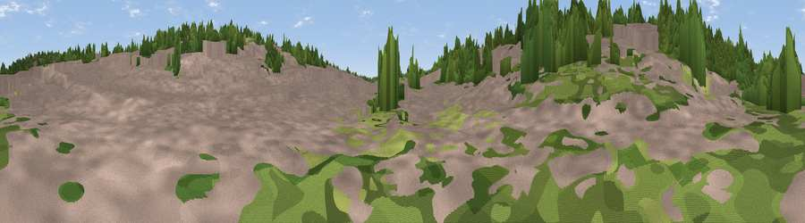

Water Gardens Mound
#46357 in England · top 100% of its area beats it · near Hemel HempsteadThe view, rendered

A 360° render of this exact spot computed from the terrain model, tree cover and land cover — summer colours, afternoon light, calibrated against photographs of famous viewpoints. Real trees, hedges and buildings will differ in detail.
The panorama
Grey silhouette: terrain skyline in each direction (720 bearings, Earth curvature and refraction included). Dashed green: skyline with trees (+15 m) and buildings (+8 m) as obstacles. Blue strip: how far the ground is visible on each bearing.
Where the view opens
Wedge length = distance to the farthest visible ground on that bearing (vegetation-aware). Rings at 10, 25 and 50 km.
What fills the view
70% built-up · 26% woodland · 3% grassland · 1% cropland
Angular shares of the visible panorama (visual magnitude), not map area. Landscape diversity 0.33 (0–1 Shannon).
Key numbers
More beautiful places nearby
The staircase of upgrades: each row has a higher view potential than everything closer. Driving times are estimates from straight-line distance, calibrated against real road routing — check an actual route before setting out.
| Place | Direction | Drive | Score |
|---|---|---|---|
| Viewpoint near Old Town | NNE · 1 km | ~3 min | 23.9 |
| Viewpoint near Corner Hall | SE · 1 km | ~4 min | 34.5 |
| Viewpoint near Tring Station | WNW · 12 km | ~22 min | 46.9 |
| Viewpoint near Aldbury | NW · 12 km | ~22 min | 56.5 |
| Viewpoint near Whipsnade | NNW · 12 km | ~23 min | 59.5 |
| Viewpoint near Tring Station | NW · 13 km | ~23 min | 68.5 |
| Beacon Hill | NW · 13 km | ~25 min | 74.1 |
| Viewpoint near Halton | W · 17 km | ~30 min | 74.3 |
51.75343, -0.47440 · source: osm peak · position refined by local search. Computed location — check access rights before visiting.